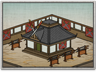
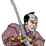
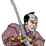

Requires
- Buildings: 
- Arts:

Enables
- Buildings:

- Units:
 



Basic Building Statistics (can be modified by difficulty level, arts, skills, traits and retainers)
- Cost: 2000
Description
Swords do not permit insolence.
This dojo allows the recruitment of no-dachi samurai units, armed with fearsome greatswords. The use of these swords is a specialised art, and not all samurai are suited or able to use no-dachi. The weapon is also one that requires considerable space, even for practice. However, the men who can use the swords command considerable respect among their peers. The term "dojo" means "the place of the way", or a formal training setting for a particular martial art. Often these would be large halls built in temple grounds, but courtyards could also be used. In the case of a no-dachi, training would have to be in the open air. A no-dachi was instantly recognisable when carried because it was worn slung over the shoulder, but its great length meant that it could not be drawn from that position. It was a weapon for the open battlefield, and rarely used indoors or in confined spaces because it needed a lot of space to use effectively. Of most use against cavalry, the no-dachi was not a common blade, as it was harder to make than a shorter sword and required a strong man to swing it!